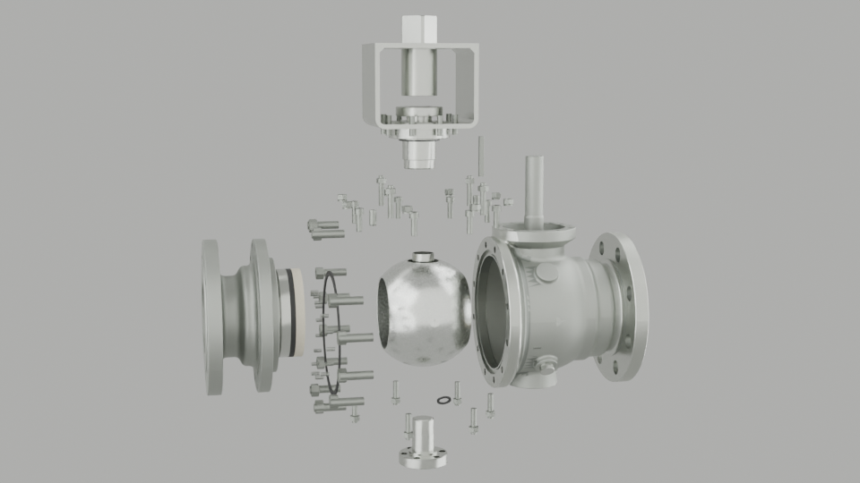
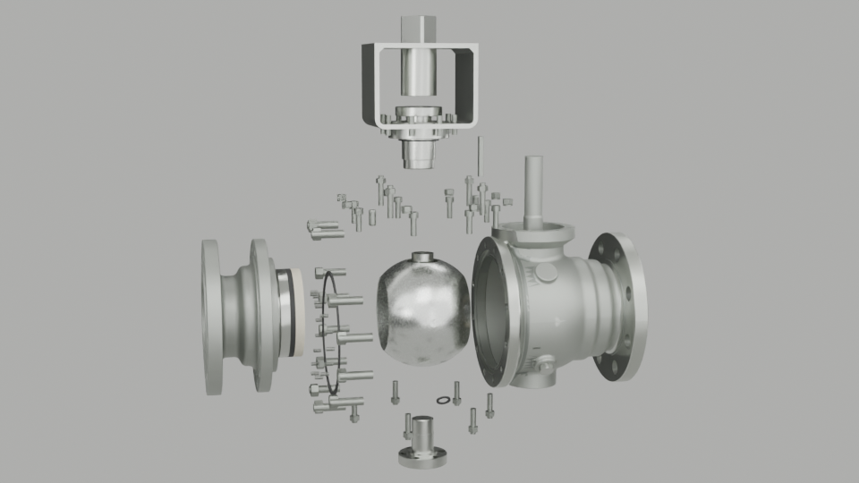
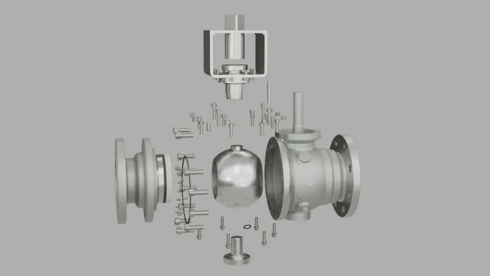

v01 direct five-light on white cloth
五灯位置保持不变，但改成白色布景/自然光棚基线，确认产品不再被黑背景吃成黑阀门。
direct-five-light-white-cloth-baseline
Three four-frame reflection-environment samples for the fixed-ball-valve hero. Main judgment frame: 0136.
lighting-lab-manifest.json

五灯位置保持不变，但改成白色布景/自然光棚基线，确认产品不再被黑背景吃成黑阀门。
direct-five-light-white-cloth-baseline

同五灯角色改为驱动大面积扩散板、白卡、黑旗和低强度正面补光，减少可读灯具反射。
diffused-white-black-reflection-environment

在 v02 环境上拉远并略收视角，把主要可见反射角族从灯具/板边移动到大渐变反射区。
v02-plus-camera-family-of-angles-trim